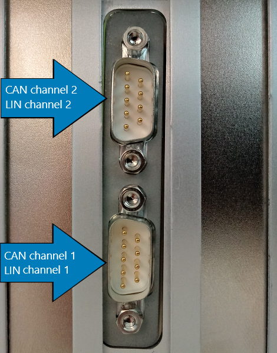

IO611 Pin Mapping
IO611 Pin Mapping — Reference information about the I/O module connector
Description
The IO611 I/O module offers two DB9 connectors. Each connector contains a CAN channel and a LIN channel.
Within this context, the LIN channels are named channel 1 and 2.
Channel Location
The LIN channels are paired with the CAN channels as follows:
CAN channel 1 with LIN channel 1
CAN channel 2 with LIN channel 2
When plugged into a Speedgoat Performance target machine, the channels are ordered as shown below:

For other machines, please refer to the orientation of the DB9 connectors.
![[Caution]](images/caution.png) | Caution |
|---|---|
For the Legacy driver blocks, the LIN channels are named channel 3 and 4. |
Connector Pin Mapping
The following figure shows the pin numbering of a DB9 connector when looking from the front (outside of the target machine).

The pin mapping of the two connectors is identical and is listed in the following table:
| Pin | Signal | Condition |
|---|---|---|
| 1 | CAN Low | CAN channel configured Low Speed (LS) |
| 2 | CAN Low | CAN channel configured High Speed (HS) or Flexible Data-rate (FD) |
| 3 | GND | |
| 4 | CAN High | CAN channel configured Low Speed (LS) |
| 5 | - | |
| 6 | - | |
| 7 | CAN High | CAN channel configured High Speed (HS) or Flexible Data-rate (FD) |
| 8 | LIN | |
| 9 | LIN VBAT (8-18 VDC)[a] | |
[a] Every LIN transceiver that belongs to the same LIN network needs to be supplied by the same voltage source. | ||
For proper operation, a CAN topology requires electrical termination in the form of resistors.
The IO611 I/O module does not include termination resistors. The full resistor comes with the CAN module loopback cable provided by Speedgoat.